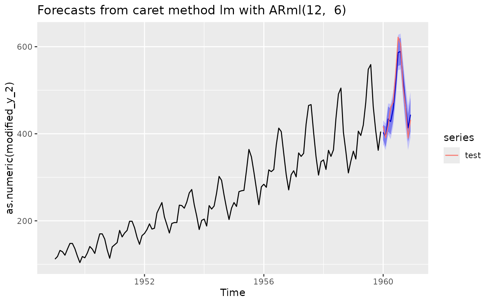
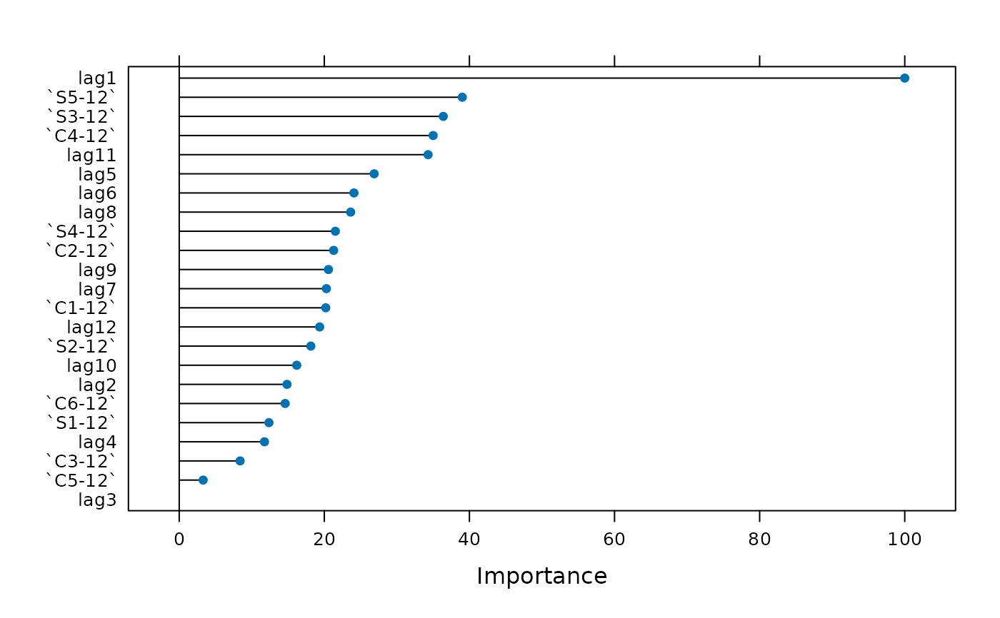

Variable importance for forecasting model.
Value
A list class of "varImp.train". See varImp or a
"trellis" plot.
Examples
train <- window(AirPassengers, end = c(1959, 12))
test <- window(AirPassengers, start = c(1960, 1))
ARml(train, caret_method = "lm", max_lag = 12, trend_method = "none",
pre_process = "center") -> fit
#> initial_window = NULL. Setting initial_window = 112
#> + Training112: intercept=TRUE
#> - Training112: intercept=TRUE
#> + Training113: intercept=TRUE
#> - Training113: intercept=TRUE
#> + Training114: intercept=TRUE
#> - Training114: intercept=TRUE
#> + Training115: intercept=TRUE
#> - Training115: intercept=TRUE
#> + Training116: intercept=TRUE
#> - Training116: intercept=TRUE
#> Aggregating results
#> Fitting final model on full training set
#> Performing horizon-specific calibration for conformal prediction intervals...
#> Calibrating conformal scores using 34 rolling windows...
#> Calibration complete. Samples per horizon: 34 to 34
forecast(fit, h = length(test), level = c(80,95)) -> fc
autoplot(fc)+ autolayer(test)

accuracy(fc, test)
#> ME RMSE MAE MPE MAPE MASE
#> Training set 3.434088e-15 10.19861 7.884296 -0.1380603 3.263387 0.2589260
#> Test set 5.515070e+00 19.71858 17.108979 0.8260714 3.540353 0.5618712
#> ACF1 Theil's U
#> Training set 0.07296876 NA
#> Test set 0.32299513 0.3864957
get_var_imp(fc, plot = TRUE)
